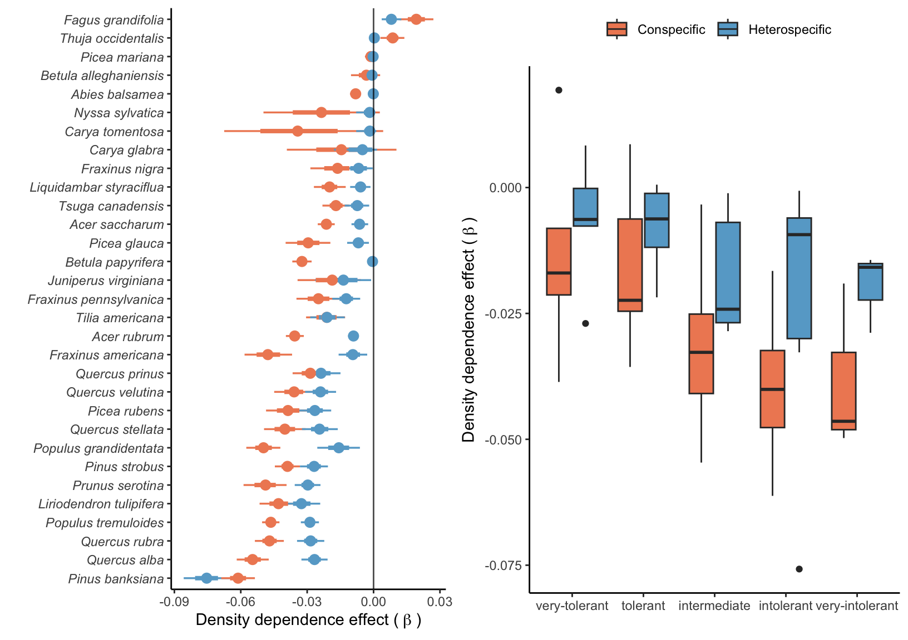
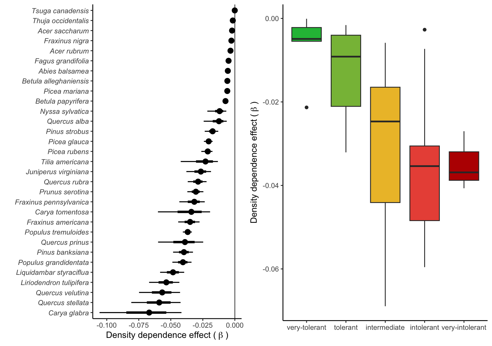
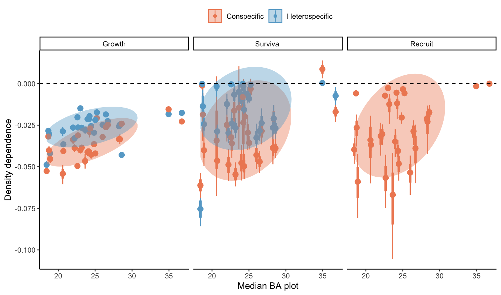

10 Competition effect
In this section, we discuss the effect of competition on the growth, survival, and recruitment vital rates. For all three demographic functions, competition for light increases linearly with the plot density, determined by the \(\beta\) parameter, indicating the density-dependent effect. Assuming that light represents the most limiting resource for trees, we define that the influence of individuals smaller than the focal tree is negligible. Consequently, we used the total basal area of individuals larger than the focal tree to measure competition. Furthermore, we divided the impact of the total basal area into contributions from conspecific and heterospecific individuals larger than the focal individual.
Conspecific and heterospecific effect
Growth
Survival

Growth vs survival
Total basal area effect on recruitment survival

How does CNDD relate to species latitude and abundance patterns?
This is mostly inspired by Hülsmann et al. (2024), where they test many hypotheses around conspecific density dependence (CNDD) around the world. Their main finding is that CNDD is stronger in the tropics compared to temperature species, but only for low or intermediate abundant species.
